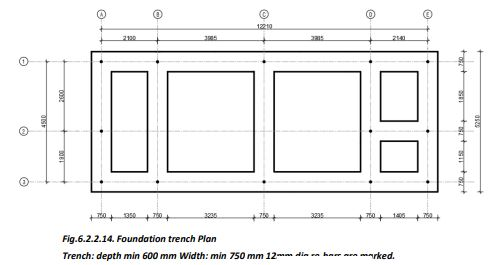

Excavation and Construction of Foundation
Excavation and Preparation for Foundation Trenches


1. Mark the foundation trench width by placing pegs at both sides of the centerline, marked during layout, equal to the foundation width required.
2. Determine safe vertical sides of the trench wall by examining the soil quality.
3. Remove the soil’s top surface and remove any waste, organic materials, and trash from there.
4. Ensure the flatness of the pit surface using a water tube level or with a scale and spirit level.
Load Bearing Structure

• Lay about 12 cm thick 1:5:10 cement concrete in the foundation trench and compact it well to obtain a level surface.
• Provide 1 no. 12mm dia vertical steel bar at every corner from the bottom of the foundation masonry.
• Construct the foundation using bricks/blocks/coursed rubble masonry in cement mortar up to the plinth level.
• The space around the foundation masonry is carefully filled with 100 mm thick layers of soil. If the soil is dry, it should be moistened by spraying water.
• Each layer should be compacted using a ground tamper to avoid damaging the foundation.
• Add layers sequentially on both sides of the foundation until the required height is reached, which is generally slightly more than the surrounding ground level.
• Any extra excavated soil can be filled in the plinth.
Construction of Foundation Trenches
● First, level the ground and remove any shrubs, boulders, etc.
● Mark the foundation trenches as per the foundation plan.
● The minimum size of foundation trenches shall be 750 mm wide and 600 mm deep. If the soil is soft, consult the JE in charge for further guidance.
● Dig the soil and stack the dug soil at least 450 mm away from the trenches.

Construction of Foundation
● Use 1 part cement and 5 to 6 parts sand for masonry mortar. Keep the plinth height at a minimum of 300mm, but it should be higher than the flood level in the area.
● Ram the foundation trenches using a ‘Durmuth’ after sprinkling water.
● Provide a layer of base concrete (min 120 mm thick), which might be thicker in undulating areas. Avoid filling excavated soil back into the trenches to level the base.
● Start masonry with blocks/stones in cement mortar up to plinth beam level.
● Ensure vertical steel bars are provided at every corner of the foundation masonry.
● Continue masonry in foundation and plinth as detailed under the masonry section.
● Provide through stones at about 1200 mm center-to-center in every alternate course of masonry.
● If long stones are not available, leave a gap of about 150 mm (6”), half fill the gap with 1:1.5:3 cement concrete, place a 10 mm diameter steel bar, and fill with concrete to make a good through stone.
● Continue masonry up to 75mm below the plinth level and then provide a 75mm thick RCC plinth band.


Further Details on Foundation Construction
● The foundation trenches should be at least 75 cm deep and 60 cm wide in normal soil.
● If you find some big rocks or boulders projecting into the trenches, do not remove them. Rough cut the top and sides to get a stepped shape, then construct the foundation masonry around the projecting rock portion.
● Level the base of the foundation trenches using 10 to 15 cm thick cement concrete (1 cement + 5 sand + 10 40mm size stone aggregate or brick ballast).
● Provide one 12 mm diameter vertical steel bar (bent 40mm at the bottom) at every corner and wall junction, from the first course of masonry in cement mortar. Fill the gap around the steel bar with cement concrete (1:1.5:3).
● Use concrete solid blocks (min strength 60Kg/sq.cm) or coursed rubble masonry in cement mortar for the foundation and plinth to reduce costs compared to red burnt clay bricks.